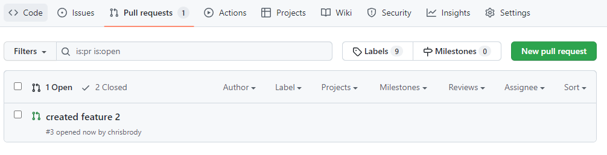

- developer pulls master branch from Github using Git in a terminal:
git pull origin master or git clone * repo url *
- developer switches to the desired branch
git checkout -b feature1
- changes are made to the new feature1 branch and committed
git commit -m "enter what was changed here"
- changes are pushed from the local repo to the remote repo feature1 branch
git push origin -feature1
-
Once a pull request has been made, the maintainer will see a message on the screen like this.

- 
- feature1 branch is deleted in remote repo
this is done after the pull request approval